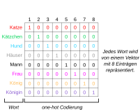
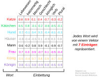
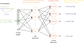
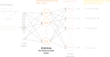
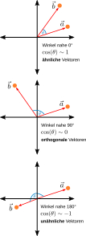

Vorlesung 4: Text als Daten


Rückblick Vorlesung 3
- Frage: Wie funktioniert unüberwachtes lernen und was unterscheidet es von überwachtem Lernen?
Antwort: Unüberwachtes Lernen oder auch Clusteranalyse versucht, unbekannte Muster in Daten zu finden. Im Gegensatz zu überwachtem Lernen gibt es keine im Voraus bekannten Klassen oder Zielwerte für Beobachtungen. - Frage: Warum sind Distanz- bzw. Ähnlichkeitsmaße wichtig für unüberwachtes Lernen?
Antwort: Wir brauchen Distanz- bzw. Ähnlichkeitsmaße um festzustellen, wie "nahe" oder "weit entfernt" zwei Datenpunkte zueinander sind. Darauf aufbauend können wir Cluster in den Daten finden. - Frage: Wie funktioniert der k-Means Algorithmus?
Antwort: Ausgehend von einem vorgegebenen Clustering werden so lange Datenpunkte in andere Cluster verschoben, bis das Clustering optimal ist (die Summe der Fehlerquadrate minimal).
Überblick über die heutige Vorlesung
- Text als Daten
- Vorhersage von Sequenzen
- Große Sprachmodelle
- Empfehlungssysteme
- Das Empfehlungssystem von X
- Zusammenfassung technische Grundlagen der KI
Paper word2vec Parameter Learning Explained
Video CS 198-126: Lecture 14 - Transformers and Attention
Paper Language Models are Few-Shot Learners
Vorlesungsfolien Recommender Systems: Value, Methods, Measurements
Blog Post Twitter's Recommendation Algorithm
[Weiterführende Lektüre]
Lernziele
- Verstehen wie große Sprachmodelle aufgebaut sind und warum sie Halluzinieren und Fehler machen.
- Verstehen wie Empfehlungsssysteme aufgebaut sind und warum sie zu Problemen führen können.
Text in Zahlen umwandeln
- Die Deutsche Sprache hat ~75.000 Worte.
- Text als one-hot codierte Vektoren darzustellen ist extrem ineffizient.
- Wie können wir die Codierung effizienter machen?
- Lösung: erlernte "Einbettungen".


Einbettungen lernen


Inspiriert von Manan Suri, A Dummy’s Guide to Word2Vec, Medium.
Vorteile von Einbettungen
- Wir benötigen viel weniger Dimensionen (üblicherweise zwischen 100 und 1000) um ein Wort darzustellen.
- Worte, die einander ähnlich sind, befinden sich an ähnlichen Positionen im Einbettungsraum. Die Kosinus-Ähnlichkeit ihrer Einbettungsvektoren ist sehr hoch.
- Wir können mit Einbettungsvektoren "rechnen".

Mit Einbettungen rechnen
"Mann" verhält sich im Vektorraum zu "Frau" wie "Bruder" zu "Schwester".
Zusammenfassung
- Um Text als Daten für maschinelles Lernen verwenden zu können, müssen wir ihn erst in Zahlen umwandeln.
- Dies geschieht mittels Einbettungen - Vektoren mit 100 bis 1000 Dimensionen die ein Wort im Kontext seiner Sprache darstellen.
- Einbettungen werden mit Hilfe von neuronalen Netzen und großen Mengen von natürlich vorkommendem Text erlernt.
- Die Einbettungsvektoren von Worten die eine ähnliche Bedeutung haben, weisen eine hohe Kosinus-Ähnlichkeit auf - die Worte befinden sich an ähnlichen Orten im Einbettungsraum.